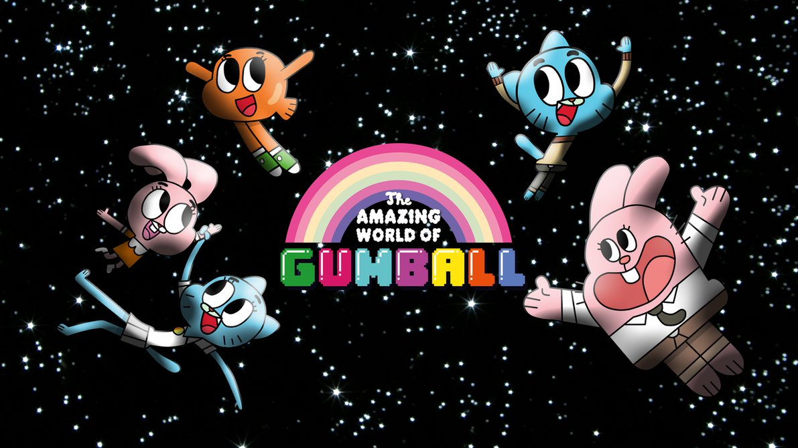

Post #1
Gumball (anteriormente Zach) Tristopher Watterson é o protagonista de O Incrível Mundo de Gumball. Ele é um gato azul de 12 anos de idade que estuda na Escola de Elmore com seu irmão adotivo de dez anos de idade, chamado Darwin e sua irmã gênio de apenas quatro anos de idade chamada Anais. Gumball estuda na Classe da Senhorita Símio.